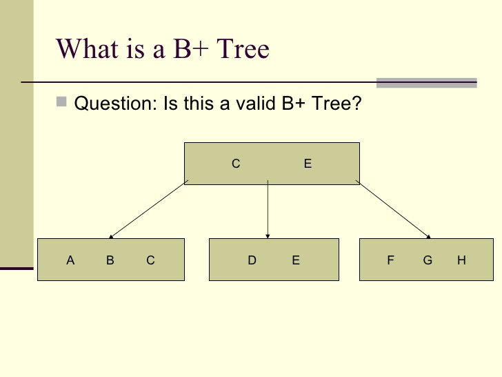
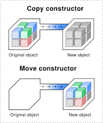
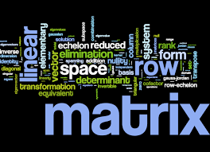

Personal Resume
Databases

Object Oriented Numerical Modeling


Linear Algebra

Biology


George Charon Ward

Achievements:
-
Navy Marine Corps Achievement Medal
-
Missouri National Guard Solider of the Year Award
-
ACM Sig-.com Active Member
-
Missouri S&T Mars Rover Design Team Prior Member
-
Dean’s List (Missouri S&T)
-
Dean’s List (Three Rivers College)
-
Student Veterans Association (Three Rivers College) Vice President
-
Student Government Association (Three Rivers College) Secretary
Work Experince:
-
Software Development Intern - Device Soutions
-
Software Development Intern - WW Wood Products
-
Data Structures Lab Grader - Missouri University Science Dept. of Computer Science
-
Aviation Structural Mechanic - United States Navy
-
Military Police - Missouri National Guard